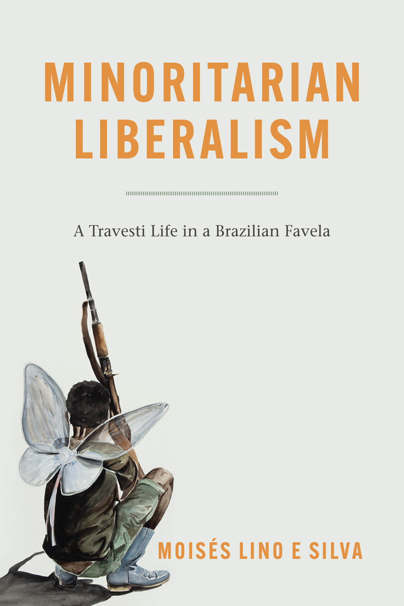

A mesmerizing ethnography of the largest favela in Rio, where residents articulate their own politics of freedom against the backdrop of multiple forms of oppression. Normative liberalism has promoted the freedom of privileged subjects, those entitled to rights—usually white, adult, heteronormative, and bourgeois—at the expense of marginalized groups, such as Black people, children, LGBTQ people, and slum dwellers. In this visceral ethnography of Rocinha, the largest favela in Rio de Janeiro, Brazil, Moisés Lino e Silva explores what happens when liberalism is challenged by people whose lives are impaired by normative understandings of liberty. He calls such marginalized visions of freedom “minoritarian liberalism,” a concept that stands in for overlapping, alternative modes of freedom—be they queer, favela, or peasant. Lino e Silva introduces readers to a broad collective of favela residents, most intimately accompanying Natasha Kellem, a charismatic self-declared travesti (a term used in Latin America to indicate a specific form of female gender construction opposite to the sex assigned at birth). While many of those the author meets consider themselves “queer,” others are treated as “abnormal” simply because they live in favelas. Through these interconnected experiences, Lino e Silva not only pushes at the boundaries of anthropological inquiry, but also offers ethnographic evidence of non-normative routes to freedom for those seeking liberties against the backdrop of capitalist exploitation, transphobia, racism, and other patterns of domination.
